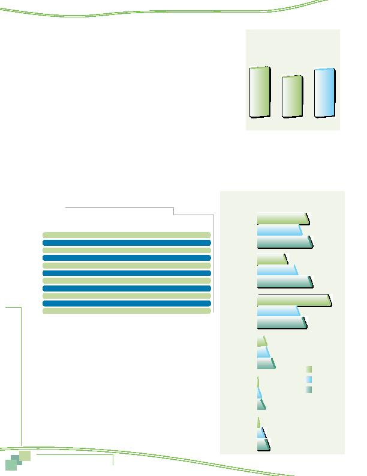

MWCOG-Comm
uter Conn
ecti
on
s-- 2010 State o
f th
e Comm
ute Report
3 8
Figure 33
Awareness of Commuter Connections' Services
2004 SOC
2007 SOC
2010 SOC
28%
24%
30%
16%
22%
30%
40%
23%
26%
5%
6%
9%
0%
1%
1%
4%
6%
2%
Help finding
CP/VP partners
Rideshare/
CP/VP info
Guaranteed
Ride Home
Transit
information
Other
Park and Ride
information
Table 13
Commuter Connections Program Referral Sources
Information Source
2010 SOC
2007 SOC
2004 SOC
Percentage Percentage Percentage
Radio
48%
43%
56%
Television
15%
16%
19%
Word of mouth, friend, co-worker
9%
8%
5%
Sign/billboard
7%
7%
5%
Newspaper ads/article
6%
7%
4%
Internet
4%
3%
2%
Employer
4%
4%
2%
Sign on transit vehicle, bus stop
4%
2%
N/A
Brochure
1%
1%
1%
Don't know
11%
14%
10%
Other*
3%
3%
4%
* Each response in "Other" category mentioned by less than one percent of respondents.
Figure 32
Awareness of Commuter Connections
(Prompted or Unprompted)
2004
2007
2010
53%
66%
64%
AWARENESS AND USE OF COMMUTER CONNECTIONS PROGRAM
The "awareness" section of the questionnaire also explored respondents' aware-
ness of the Commuter Connections Network and the services it offers commuters. Some
indications of respondents' awareness of the program appeared in unprompted questions
about regional commute advertising messages, advertising sponsors, and regional com-
muter information resources.
As noted earlier, two percent of the regional population named Commuter
Connections as a regional information source without being prompted with the orga-
nization's name. But when directly asked if they had heard of an organization in the
Washington region called Commuter Connections, an additional 62% of respondents said
they had heard of the program, for a total of 64%. This was higher than the percentage
who knew of Commuter Connections in 2007 (53%) and about the same level of name
recognition that was observed in 2004 (66%). (See Figure 32).
Referral Sources to Commuter Connections Program
Table 13 displays the methods by which respondents reported learning about Commuter Connections in 2010, with comparisons
to sources named in 2007 and in 2004. In 2010, almost half (48%) of respondents cited the radio as their source of information and
about 15% named television. Word of mouth/referrals (9%), sign/billboard (7%), and newspaper ads or articles (6%), were other
common sources. Smaller percentages cited other sources, including internet (4%), employer (4%), sign on a transit vehicle (4%), or
brochure (1%). About 11% said they didn't remember how they heard about Commuter Connections. The 2010 results were very similar
to those observed in 2007.
Awareness and Use of Commuter Connections' Services
Respondents who knew of Commuter Connections were asked what
services the organization provided. Their responses are shown in Figure
33. About three in ten said they didn't know specific services offered by
the program, but respondents who did mention a service largely cited
services that Commuter Connections actually does provide. Six in ten knew
the program offered either general rideshare information (30%) or help
finding a carpool or vanpool partner (30%). About a quarter (26%) knew
that Commuter Connections offered a regional Guaranteed Ride Home
program. Nine percent said Commuter Connections offered transit route and
schedule information, which can be accessed through links on Commuter
Connections' web site.
Awareness and Use of Commuter
Assistance Resources